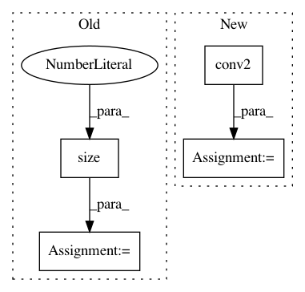

8cc023c568f2cdcdf5c34c5fa1b76090073bca73,gluon/gluoncv2/models/resattnet.py,ResAttNet,forward,#ResAttNet#Any#,342
Before Change
def forward(self, x):
x = self.features(x)
x = x.view(x.size(0), -1)
x = self.output(x)
return x
After Change
self.pool = nn.MaxPool2D(
pool_size=3,
strides=2,
padding=1)
self.res_blocks = ResBlockSequence(
in_channels=in_channels,
out_channels=out_channels,
In pattern: SUPERPATTERN
Frequency: 3
Non-data size: 4
Instances
Project Name: osmr/imgclsmob
Commit Name: 8cc023c568f2cdcdf5c34c5fa1b76090073bca73
Time: 2018-12-04
Author: osemery@gmail.com
File Name: gluon/gluoncv2/models/resattnet.py
Class Name: ResAttNet
Method Name: forward
Project Name: KaiyangZhou/deep-person-reid
Commit Name: 710b9ac1a28d418bddc41aeeda320ab4de4d17fe
Time: 2018-10-26
Author: k.zhou@qmul.ac.uk
File Name: torchreid/models/resnet.py
Class Name: ResNet101
Method Name: forward
Project Name: rusty1s/pytorch_geometric
Commit Name: 4e43734dd0b7f1c026069af64151a8f52f41060d
Time: 2019-07-03
Author: matthias.fey@tu-dortmund.de
File Name: torch_geometric/nn/conv/gat_conv.py
Class Name: GATConv
Method Name: forward